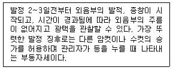

축산산업기사 (2003-08-31 기출문제)
1과목: 가축번식 육종학
1. 젖소의 다음 경제형질 중 유전력과 반복력이 가장 높은 것은?
- 비유량
- 유지량
- 유지율
- 번식능력
(정답률: 81%)

2. 후손을 남기기 위한 종축으로 사용하기 위하여 능력이 우수한 가축을 골라내는 것은?
- 인위 선발
- 자연 선발
- 근친 교배
- 잡종 교배
(정답률: 81%)
3. 품종간 또는 계통간 교배의 이용 목적이 아닌 것은?
- 새로운 유전자의 도입
- 새로운 품종이나 계통의 조성
- 우수한 유전자의 고정
- 잡종 강세의 이용
(정답률: 61%)
4. 형매 검정을 가장 효과적으로 이용할 수 있는 축종은?
- 젖소
- 고기소
- 돼지
- 닭
(정답률: 69%)
5. 분만 과정은 준비기, 태아 만출기, 태반 만출기로 나뉘어진다. 준비기에 일어나는 특징적인 현상이 아닌 것은?
- 자궁 경관의 확장
- 자궁 근육의 수축
- 제 1 파수
- 옥시토신의 방출
(정답률: 66%)
6. 산란계의 선발요건으로 부적당한 것은?
- 다산일 것
- 산란기간내 폐사율이 적을 것
- 몸의 크기가 클 것
- 사료 이용성이 좋을 것
(정답률: 85%)
7. 번식장해의 가장 큰 원인이 되는 것은?
- 고창증
- 간장염
- 자궁 내막염
- 심낭염
(정답률: 92%)
8. 난자의 생산과 이동경로가 올바르게 연결된 것은?
- 난소 - 난관팽대부 - 난관채 - 난관협부 - 난관자궁접속부 - 자궁
- 난소 - 난관채 - 난관팽대부 - 난관협부 - 난관자궁접속부 - 자궁
- 난소 - 난관채 - 난관협부 - 난관팽대부 - 난관자궁접속부 - 자궁
- 난소 - 난관협부 - 난관팽대부 - 난관채 - 난관자궁접속부 - 자궁
(정답률: 72%)
9. 일반적인 소의 분만 후 평균 첫발정 재귀기간은?
- 1-2일
- 13-14일
- 50-60일
- 90-100일
(정답률: 67%)
10. 육우의 개량시 고려해야 할 경제 형질이라고 보기 어려운 것은?
- 번식간격
- 일당 증체
- 모색
- 배장근 단면적
(정답률: 84%)
11. 소의 분만 유기시 이용되는 호르몬제는?
- Gonadotropins
- HCG
- Prostaglandins(PGF2α)
- PMSG
(정답률: 76%)
12. 황체형성호르몬(LH)의 기능으로 알맞는 것은?
- 난포의 발육촉진과 부생식기의 성장 촉진
- 황체형성 촉진과 배란
- 비유개시
- 황체호르몬의 분비촉진 및 모성애 발현
(정답률: 88%)
13. 2품종간 교잡종의 암퇘지에 제 3품종인 수퇘지를 교배시켜서 생산된 돼지를 무엇이라 하는가?
- 일대잡종
- 3원교잡종
- 4원교잡종
- 퇴교배종
(정답률: 76%)
14. 한우 암소의 개량 대상이 되는 형질 중 번식형질에 속하는 것은?
- 생시체중, 이유시 체중
- 사료요구율, 체형과 외모
- 초산일령, 발정재귀일수
- 육질등급, 육량등급
(정답률: 88%)
15. 육용계의 산육능력에 관한 유전에서 잘못된 설명은?
- 성장률에 대한 유전력은 높은 편이다.
- 근친교배종이 잡종교배종에 비해 일반적으로 성장률이 빠르다.
- 생체중과 정강이 길이간의 상관이 아주 높다.
- 숫병아리가 암병아리에 비해 성장률이 빠르다.
(정답률: 71%)
16. 젖소의 산유 능력 검정에 있어 개체의 산유 능력을 정확하게 평가 비교하기 위해서 비유전적 요인에 대한 통계적 보정이 필요하다. 다음 중 보정할 필요가 없는 요인은?
- 착유 속도
- 착유 회수
- 분만 연령
- 공태 기간
(정답률: 74%)
17. 다음 사항 중 소에서 번식 장해로 취급하는 기준으로 옳지 않은 것은?
- 미경산우는 3회 이상 교미에도 수태되지 않을 때
- 번식 년령이 되어도 발정이 오지 않을 때
- 경산우에서 분만 5개월까지 반복 교미하여도 수태되지 않을 때
- 분만 직전 또는 분만 경과 중 태아의 사망은 번식장해로 취급하지 않는다.
(정답률: 72%)
18. 수정적기를 결정하는 요인으로 보기 어려운 것은?
- 배란시기
- 빈축의 발정주기
- 정자의 수정능력 보유시간
- 난자의 수정능력 보유시간
(정답률: 68%)
19. 다음의 글은 어떤 가축의 발정 징후인가?

- 돼지
- 말
- 소
- 면, 산양
(정답률: 87%)
20. 수컷에 있어서 성성숙이란?
- 춘기 발동기
- 성선의 발육 개시기
- 춘기 발동기의 완료
- 난소의 발육기
(정답률: 82%)
2과목: 가축사양학
21. NRC 사양표준에서 0-3주령의 브로일러용 배합사료의 단백질 함량은?
- 23%
- 2%
- 17%
- 15%
(정답률: 73%)
22. 비육시 지방조직의 발달순서가 옳은 것은?
- 피하지방 - 근육간지방 - 신장지방 - 근육내지방
- 근육간지방 - 근육내지방 - 신장지방 - 피하지방
- 근육내지방 - 신장지방 - 근육간지방 - 피하지방
- 신장지방 - 근육간지방 - 피하지방 - 근육내지방
(정답률: 73%)
23. 곡류사료의 영양적 특징이 아닌 것은?
- 가축의 기호성이 높다.
- 소화율이 높다.
- 영양가가 많다.
- 인(P)보다 칼슘(Ca) 함량이 높다.
(정답률: 83%)
24. 사료내 결핍시 육성계에서 뇌연화증(encephalomalacia)이 라는 특징적인 결핍증을 일으키는 vitamin은 무엇인가?
- Vitamin A
- Vitamin E
- Riboflavin
- Choline
(정답률: 70%)
25. 가소화영양소총량(TDN)을 구할 때 지방의 경우 2.25의 계수를 곱하여 계산하는 이유는?
- 탄수화물의 열량값이 지방보다 크므로
- 단백질의 단백질값이 지방보다 크므로
- 지방의 열량값이 탄수화물과 단백질보다 크므로
- 탄수화물의 전분값이 지방보다 크므로
(정답률: 81%)
26. 사료 중 함유된 수분이 15%, 조단백질 함량이 10%, 조지방 함량이 4%, 조섬유 함량이 5%인데 가용무질소물(NFE) 함량은 얼마인가?
- 61%
- 66%
- 76%
- 81%
(정답률: 60%)
27. 일조시간이 길어지는 4월에 생산된 산란계 초생추를 개방식 계사에서 사육할 때 적당한 점등 방법은?
- 자연일조점등
- 일정시간점등
- 점감점증점등
- 간헐점등
(정답률: 72%)
28. 고급육 생산을 위해 거세를 실시하는 것이 필수적인데 다음 중 거세의 효과가 아닌 것은?
- 근내지방도가 비육기에 크게 증가한다.
- 근섬유가 가늘어지면서 고기의 연도가 개선된다.
- 소의 성질을 온순하게 하여 사양관리가 용이하다.
- 웅성호르몬(testosterone)의 수준이 증가한다.
(정답률: 84%)
29. 사료용 탤로우를 사용할 때의 이점이 아닌 것은?
- 저에너지 사료를 만들 수 있다.
- 사료의 맛을 개선한다.
- 사료공장에서 먼지가 나지 않게 한다.
- 브로일러에서 급여할 경우 육질이나 색을 좋게 한다.
(정답률: 72%)
30. 젖소의 비유량은 몇산째 가장 많은가?
- 초산
- 2산
- 3산
- 4산
(정답률: 61%)
31. 다음 사료 중 돼지의 체지방을 희고 단단하게 하는 사료는 어느 것인가?
- 대두박
- 쌀겨
- 보리
- 옥수수
(정답률: 80%)
32. 목초의 생육시기가 진행됨에 따른 변화 중 틀린 것은?
- 조단백질 감소
- 소화율 증가
- 조섬유 증가
- 소화율 감소
(정답률: 69%)
33. 가축의 성장곡선(S자 곡선)에 대한 설명 중 맞는 것은?
- 태아시기와 출생 후 성성숙기까지는 성장률이 빨리 증가한다.
- 성성숙기 이후부터 빠른 성장을 한다.
- 성숙체중에 가까와지면 성장률은 더욱 빨라진다.
- 일정한 속도를 유지하며 성장한다.
(정답률: 72%)
34. 사료를 섭취하지 않고 기초적인 대사활동을 위해 필요한 영양소들을 체조직이 분해되어 공급되는 대사과정을 절식대사라고 하는데 이 대사과정에 관한 설명이 맞지 않는 것은？
- 동물이 섭취한 사료의 소화흡수가 완전히 끝나면 근육과 간에 저장되어 있던 글리코겐이 분해되어 에너지를 공급한다.
- 절식시 체단백질 분해량은 체지방이 상대적으로 적게 축적된 어린 동물이 늙은 동물보다 더 많다.
- 내생질소는 내생뇨질소 + 대사분질소이며 기초대사와 관련된 내생질소는 주로 내생뇨질소를 의미하고, 대사분질소는 소화효소에 기인된 것으로 기초대사와 직접 관련된 것은 극히 적다.
- 무기물 대사는 절식때도 활발히 일어나고 분해된 무기물은 전부 배설된다.
(정답률: 66%)
35. 방목하는 젖소에서 가끔 발생되는 그라스 테타니(grass tetany)는 어떤 무기물이 결핍되면 발생하는가?
- Mg
- Mn
- Cu
- Co
(정답률: 74%)
36. 착유중인 젖소 사료에 함유되어야 할 최소한의 조섬유 함량은 얼마인가?
- 10% 이하
- 10-12%
- 12-14%
- 16% 이상
(정답률: 67%)
37. 산란계에 있어서 기별사양의 설명으로 틀린 것은?
- 연령과 산란의 단계에 맞춘다.
- 계절 변화에 따라 사양을 하는 것이다.
- 영양소 요구량의 차이를 감안한다.
- 경제성, 사료효율을 위한 영양소 조절을 한다.
(정답률: 54%)
38. 가축에 급여하는 영양 수준의 차이에 의한 번식반응를 설명한 내용 중 잘못된 것은?
- 육성기 때 저영양수준의 사양은 성성숙이 지연되고 고영양수준의 사양은 성성숙은 빨라지지나 과도한 지방축적으로 번식능력의 저하를 초래
- 종모축을 저영양 수준으로 사육하면 정자 생산, 승가행위 등이 불량해짐
- 번식가축에서 에너지 및 단백질은 태아발육, 차기 우유생산을 위한 체내에너지 축적, 자체발육 등을 위해 충분한 량을 고려함
- 처녀우의 발정개시 시기는 체중보다 연령에 더 큰 영향을 받음
(정답률: 66%)
39. N.R.C.사양표준에 의하여 체중 1.8㎏인 산란계의 경우에 1일 사료 섭취량은?
- 110 g
- 150 g
- 180 g
- 210 g
(정답률: 60%)
40. 1일 평균 물의 요구량이 가장 큰 가축은?
- 한우
- 육우
- 젖소
- 말
(정답률: 86%)
3과목: 축산경영학
41. 브로일러 양계경영의 장점이 되는 것은?
- 가격변화가 심하다.
- 출하조정이 용이하다.
- 수송,보관이 용이하다.
- 자본회전율이 높다.
(정답률: 78%)
42. 다음 중 결합관계의 생산물이 아닌 것은?
- 우유와 젖소 송아지
- 쇠고기와 쇠가죽
- 오리고기와 오리털
- 닭고기와 돼지고기
(정답률: 75%)
43. 비육돈 경영비 중 가장 큰 비중을 차지하는 비목은?
- 위생치료비
- 고용노력비
- 감가상각비
- 사료비
(정답률: 75%)
44. 토지자원이 풍부한 나라의 축산경영 방식은?
- 개방적 경영
- 폐쇄적 경영
- 조방적 경영
- 집약적 경영
(정답률: 79%)
45. 양돈비육경영의 수익성 향상 방안에 해당되는 것은?
- 산자수를 많게 할 것
- 연간 비육회전율을 높일 것
- 자돈가격을 높일 것
- 연간 분만회수를 증가시킬 것
(정답률: 68%)
46. 축산경영의 의사결정 사항에 해당되지 않는 것은?
- 경영부문의 결정과 자원배분
- 비효과적인 경영관리 계획
- 투자와 자본조달 계획
- 판매계획의 결정
(정답률: 61%)
47. 축산경영의 자본진단지표가 아닌 것은?
- 고정자본율
- 자기자본율
- 고정비율
- 손익분기율
(정답률: 72%)
48. 양돈경영의 수익성에 직접 영향을 미치지 않는 항목은?
- 자가노동
- 투입물가격
- 생산물가격
- 사육마리수
(정답률: 69%)
49. 감가상각의 원인이 아닌 것은?
- 사용 마모에 따른 감가
- 자연적 소모에 따른 감가
- 진부화에 의한 감가
- 부채상환을 위한 감가
(정답률: 55%)
50. 다음 중 손익계산서 등식은?
- 총비용 - 총수익 = 순손실
- 총수익 + 총비용 = 순이익
- 총비용 + 순이익 = 총수익
- 총수익 + 순이익 = 총비용
(정답률: 63%)
51. 채란양계의 고정비 항목이 아닌 것은?
- 유지 사료비
- 건물 상각비
- 농기구 수선비
- 산란계 상각비
(정답률: 53%)
52. 축산경영시 경제적 거리와의 관계를 설명한 것 중 틀린 것은?
- 농장과 시장과의 거리가 멀수록 판매생산물의 문전가격이 낮아진다.
- 농장과 시장과의 거리가 멀수록 축산물의 생산비는 높아진다.
- 농장과 시장과의 거리가 멀수록 사료와 기타 재료는 고가로 구입하게 된다.
- 농장과 시장과의 거리가 멀수록 구입재의 문전가격이 낮아진다.
(정답률: 64%)
53. 축산경영의 공동조직 운영원칙으로 적합하지 않은 것은?
- 인화의 원칙
- 경합의 원칙
- 유리성의 원칙
- 민주화의 원칙
(정답률: 68%)
54. 자본가적 기업 경영에 있어 축산 경영의 기본 목표는?
- 자본의 극대화
- 행복의 극대화
- 이윤의 극대화
- 보수의 최소화
(정답률: 84%)
55. 축산경영자의 경제적 기능에 해당되지 않는 것은?
- 사료작물과 가축의 종류를 선택하고 결정한다.
- 경영성과인 생산물을 처리한다.
- 경영성과를 분석하고 경영계획을 세운다.
- 생산과정을 관리한다.
(정답률: 61%)
56. 조방적(粗放的)인 축산업이 이루어지는 지역은?
- 농가호수가 적고 농지면적이 많은 곳
- 농가호수가 많고 농지면적이 적은 곳
- 농가호수가 많고 농지면적이 많은 곳
- 농가호수가 적고 농지면적이 적은 곳
(정답률: 62%)
57. 취득원가 1,000,000원, 잔존율 10%, 내용년수 5년인 기계에 제 1차년도 감각상각액(급수법)은 얼마인가?
- 15만원
- 20만원
- 25만원
- 30만원
(정답률: 40%)
58. 우유생산비 중에서 가장 큰 비중을 차지하는 비목은?
- 사료비
- 인공수정비
- 자가노동비
- 차입자본이자
(정답률: 75%)
59. 대차대조표의 구성 요소는?
- 자산, 부채, 자본
- 자본, 토지, 손익
- 자산, 수익, 자본
- 자산, 부채, 가축
(정답률: 77%)
60. 다음 가축 중에서 유동자본재인 것은?
- 비육우(肥育牛)
- 젖소(乳牛)
- 종모우(種牡牛)
- 번식돈(繁殖豚)
(정답률: 77%)
4과목: 사료작물학
61. 다음은 방목 및 예취가 목초의 식생에 미치는 영향에 대한 설명이다. 가장 부적절한 설명은?
- 방목 때에는 불규칙하게 베어지나 기계로 벨 때에는 최소한의 높이로 베어진다.
- 계속 방목할 경우에는 짧은 기간에 계속해서 베어질 경우도 있으나 기계로 벨 때에는 일정한 재생기간을 가진다.
- 방목할 때에는 베는 횟수가 많아지고 가축의 이가 닿을 수 있는 곳까지 베어지나 예취할 때에는 일정한 높이를 유지할 수 있다.
- 방목할 때에는 상번초가 유리하고 예취할 때에는 하번초가 재생에 유리하다.
(정답률: 67%)
62. 오차드그라스는 1년에 몇회 정도 예취하는 것이 수량상 가장 좋은가?
- 1~2회
- 3~4회
- 5~6회
- 7~8회
(정답률: 75%)
63. 기후 및 토양적으로 적응범위가 가장 넓은 목초는?
- 티머시
- 토올 페스큐
- 오차드 그라스
- 이탈리안 라이그라스
(정답률: 53%)
64. 알팔파는 단위면적당 수량이 높고 단백질 함량이 높아 사초의 여왕이라 불린다. 그러면 우리나라에서 알팔파 재배시 일반적인 제한 요인에 대한 설명으로 거리가 먼 것은?
- 신규조성시 근류균의 접종이 필요하다.
- 수확기계 및 장비가 추가로 필요하다.
- 배수가 잘 되도록 하여 산성토양의 교정이 필수적이다.
- 미량원소 특히 붕소의 시용이 효과적이다.
(정답률: 76%)
65. 다음 사료작물 중 하고 현상에 가장 강한 품종은?
- 오차드그라스
- 티머시
- 수단그라스
- 레드클로버
(정답률: 80%)
66. 목초 파종 후 복토의 깊이가 가장 좋은 것은?
- 종자지름의 0.1~0.5배
- 종자지름의 2~3배
- 종자지름의 5~6배
- 종자지름의 8~9배
(정답률: 74%)
67. 수단그라스계 잡종에 대한 설명으로 가장 적합한 것은?
- 연간 2～3회 수확하기 위해서는 옥수수보다 일찍 파종하는 것이 좋다.
- 순계 수수나 수단그라스보다는 수수 × 수단그라스 또는 수단그라스간 교잡종의 수량이 높다.
- 대가 굵은 만생형 수단그라스계 잡종은 사일리지용으로 알맞다.
- 대가 쉽게 뻣뻣해지므로 일찍부터 방목이나 예취하는 것이 좋다.
(정답률: 69%)
68. 사일리지용 옥수수의 수확시기는 사일리지의 발효와 품질에 많은 영향을 미친다. 다음 중 옥수수 사일리지의 수확적기에 대한 설명을 거리가 먼 것은?
- 황숙기
- 생리적 성숙기(흑색층 형성기)
- 수분함량 68~72% 도달기
- 출사기로부터 60일 전후
(정답률: 66%)
69. 사일리지의 품질감정 중 화학적 방법에 의한 품질 감정을 설명한 것이다. 잘못된 것은?
- 건물함량에 관계없이 pH치(산도)가 같으면 비슷한 발효 양상을 보이므로 질이 비슷하다.
- 사일리지의 유기산 비율은 젖산함량이 높고 낙산의 함량이 없거나 적을수록 양질의 사일리지이다.
- 전 질소함량 중 암모니아태 질소의 비율은 낮을수록 우수한 사일리지이다.
- 총산에 대한 초산의 비율을 사일리지의 질에 크게 문제가 되지 않는다.
(정답률: 70%)
70. 건초를 장기간 저장하기 위해서는 수분함량, 저장장소, 저장방법 등에 주의해야 한다. 저장 중 건초의 수분함량이 높아 나타나는 현상을 잘못 설명하고 있는 것은?
- 백색곰팡이가 발생하여 품질이 저하한다.
- 호흡 및 발열에 의하여 건물손실이 증가한다.
- 고온으로 자연발화하여 화재가 발생한다.
- 고온으로 불용성 단백질함량이 감소한다.
(정답률: 64%)
71. 사일리지용 옥수수의 건물수량 구성 중 암이삭이 차지하는 비율은?
- 50%
- 30%
- 20%
- 10%
(정답률: 77%)
72. 오차드그라스에 대한 설명 중 틀린 것은?
- 가을에만 파종한다.
- 채종으로 이용하는 것 이외에는 혼파하는 것이 좋다.
- 가장 적합한 이용은 방목과 채초라 할 수 있다.
- 생육에 가장 알맞는 기온은 21℃ 정도이다.
(정답률: 75%)
73. 맥류 중 내한성이 가장 강하여 중북부 지방의 답리작 사료작물로 알맞는 작물은?
- 연맥
- 호밀
- 밀
- 보리
(정답률: 76%)
74. 건조지대에서 많이 이용하며 종자나 비료를 절약할 수 있으나 비료의 염해를 받을 염려가 있는 파종방법은?
- 조파(條播)
- 대상조파(帶狀條播)
- 산파(散播)
- 골겉뿌림
(정답률: 65%)
75. 발아 후 초기생육이 가장 빠른 사료작물은?
- 레드톱
- 오차드그라스
- 켄터키블루그라스
- 이탈리안라이그라스
(정답률: 72%)
76. 산성토양 중화에 사용되는 것은?
- 질소
- 인산
- 칼륨
- 석회
(정답률: 73%)
77. 사료작물은 성숙함에 따라 화학적 조성분이 변화한다. 다음 중 설명이 틀린 것은?
- 섬유소 증가
- 조단백질 감소
- 소화율 감소
- 수분함량의 증가
(정답률: 66%)
78. 건초를 조제할 때에는 양과 질을 고려하여 수확하여야 한다. 다음 건초조제에 알맞은 수확시기로 가장 알맞은 것은?
- 알팔파 1회 예취 - 만개화기
- 오차드 그라스 - 호숙기
- 콩과와 화본과의 혼파초지 - 영양생장기
- 호밀, 연맥 - 출수기
(정답률: 72%)
79. 건초조제 중 건조효율을 높이는 방법과 관련이 가장 적은 것은?
- 테딩(tedding)
- 포르말린(formalin) 사용
- 탄산칼륨(potassium carbonate) 사용
- 탄산나트륨(sodium carbonate) 사용
(정답률: 63%)
80. 건초의 품질은 재료의 종류, 목초의 성숙도, 조제방법 등에 따라 달라지며, 가축생산성과 밀접한 연관이 있다. 다음 중 건초의 평가기준과 거리가 먼 것은?
- 녹색도와 곰팡이 발생여부
- 잎의 비율과 순도
- 건초의 제조방법
- 향기와 촉감
(정답률: 72%)